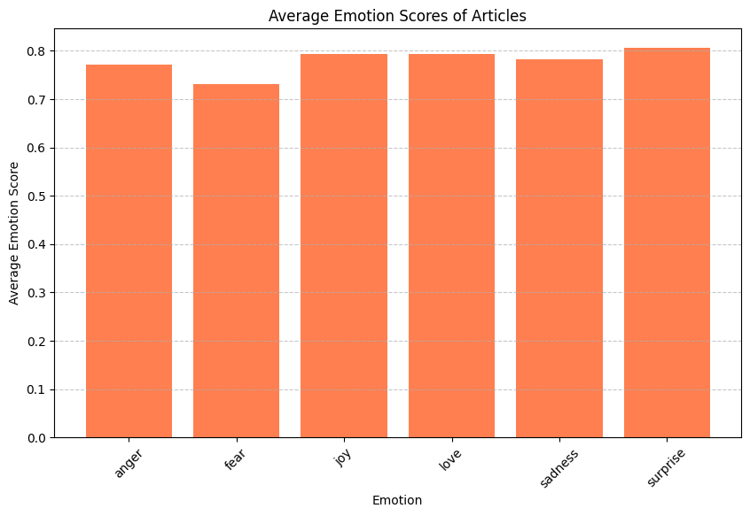
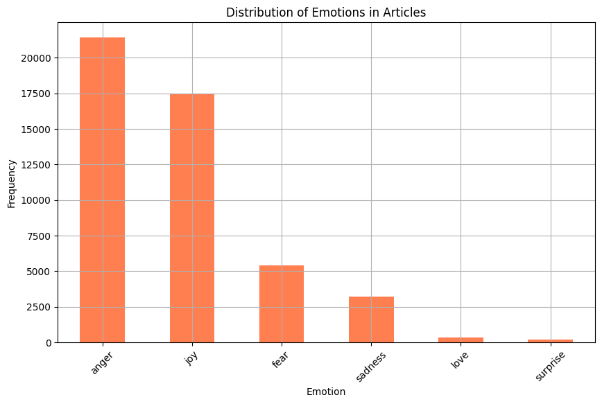
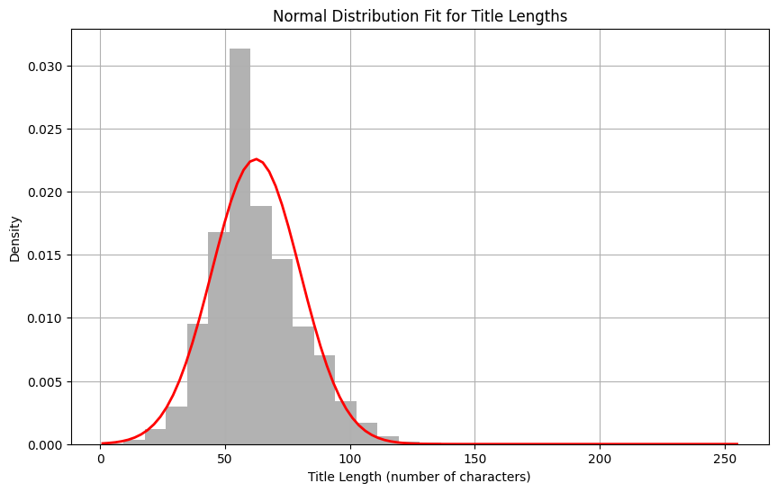

import pandas as pdimport matplotlib.pyplot as plt# Load the datadata = pd.read_csv(r"C:\Users\shruthi\Downloads\main.csv")# Display the first few rows of the data to understand its structuredata.head()
Unnamed: 0
DATE
AUTHOR
TITLE
cleaned
sentiment
sentiment_score
emotion
emotion_score
ARTICLE
0
205074
2019-06-29
Field Level Media
Sanchez, Nationals shut down Tigers
Sanchez , Nationals shut tiger
neutral
0.892794
anger
0.772276
Anibal Sanchez pitched six strong innings Frid...
1
205655
2019-06-11
Field Level Media
Rays top A's as Morton's unbeaten streak hits 21
ray Morton unbeaten streak hit 21
neutral
0.626775
joy
0.990553
Aided by three home runs, right-hander Charlie...
2
205885
2019-06-15
Field Level Media
Jimenez, White Sox crush Sabathia, Yankees
Jimenez , White Sox crush Sabathia , Yankees
neutral
0.899590
anger
0.657171
EditorsNote: Changed stat ‘eight runs’ to ‘fiv...
3
206081
2019-06-15
Field Level Media
Giants crack three homers, down Brewers
giant crack homer , brewer
neutral
0.829722
anger
0.467322
Kevin Pillar had three hits and drove in the t...
4
206131
2019-06-19
Field Level Media
A's crack six homers, obliterate Orioles
crack homer , obliterate Orioles
neutral
0.706669
anger
0.490198
Beau Taylor triggered a six-homer assault on B...
# Check the unique emotions in the dataset and calculate mean emotion scoresemotion_distribution = data['emotion'].value_counts()average_emotion_scores = data.groupby('emotion')['emotion_score'].mean()emotion_distribution, average_emotion_scores
(anger 21417
joy 17426
fear 5410
sadness 3217
love 355
surprise 181
Name: emotion, dtype: int64,
emotion
anger 0.771133
fear 0.730765
joy 0.793491
love 0.793129
sadness 0.782808
surprise 0.805796
Name: emotion_score, dtype: float64)
# Create a bar chart for the average emotion scoresplt.figure(figsize=(10, 6))plt.bar(average_emotion_scores.index, average_emotion_scores.values, color='coral')plt.title('Average Emotion Scores of Articles')plt.xlabel('Emotion')plt.ylabel('Average Emotion Score')plt.xticks(rotation=45)plt.grid(axis='y', linestyle='--', alpha=0.7)plt.show()

bar chart for the average emotion scores across the articles shows the average intensity of each emotion, with “surprise” having the highest average score, indicating a generally strong expression of this emotion in the articles where it appears.
# Calculate the average length of the articles in terms of number of wordsdata['article_length'] = data['ARTICLE'].apply(lambda x: len(x.split())) # Split articles into words and count themaverage_article_length = data['article_length'].mean() # Calculate the average lengthaverage_article_length
337.7476982043911
The average article length of approximately 338 words suggests that the articles are concise, likely designed to deliver information efficiently, possibly catering to readers who prefer quick updates or summaries rather than in-depth analysis. This length is typical for news articles or updates that aim to keep readers informed without requiring extensive reading time.
#Calculate the mode of the 'emotion' columnemotion_mode = data['emotion'].mode()[0]emotion_mode
'anger'
# Count of each emotion typeemotion_counts = data['emotion'].value_counts()# Plot the counts of each emotionplt.figure(figsize=(10, 6))emotion_counts.plot(kind='bar', color='coral')plt.title('Distribution of Emotions in Articles')plt.xlabel('Emotion')plt.ylabel('Frequency')plt.xticks(rotation=45)plt.grid(True)plt.show()

The predominance of “anger” as the most frequent emotion in the articles suggests that the dataset largely comprises content focused on provocative or conflict-driven topics, potentially aimed at engaging readers through strong emotional responses.
data['title_length'] = data['TITLE'].apply(len)# Calculate mean and standard deviation again for title lengthsmean_title_length = data['title_length'].mean()std_title_length = data['title_length'].std()mean_title_length,std_title_length
(62.38182727159105, 17.67389274801925)
# Create a range of values for x (title length) and calculate the normal distribution manuallyimport numpy as npx_normal = np.linspace(data['title_length'].min(), data['title_length'].max(), 100)p_normal = (1/ (std_title_length * np.sqrt(2* np.pi))) * np.exp(-0.5* ((x_normal - mean_title_length) / std_title_length) **2)# Plot the histogram and the normal distribution curve manuallyplt.figure(figsize=(10, 6))plt.hist(data['title_length'], bins=30, density=True, alpha=0.6, color='grey')plt.plot(x_normal, p_normal, 'r', linewidth=2)plt.title('Normal Distribution Fit for Title Lengths')plt.xlabel('Title Length (number of characters)')plt.ylabel('Density')plt.grid(True)plt.show()

From the normal distribution of title lengths, we can infer that most titles in your dataset are around 62 characters long, indicating a strategy to keep titles concise yet informative. The variability shown suggests flexibility in title length to accommodate different topics, while the overall symmetry around the mean points to consistent editorial standards. This balance reflects a deliberate editorial strategy aimed at optimizing title lengths for reader engagement and readability.